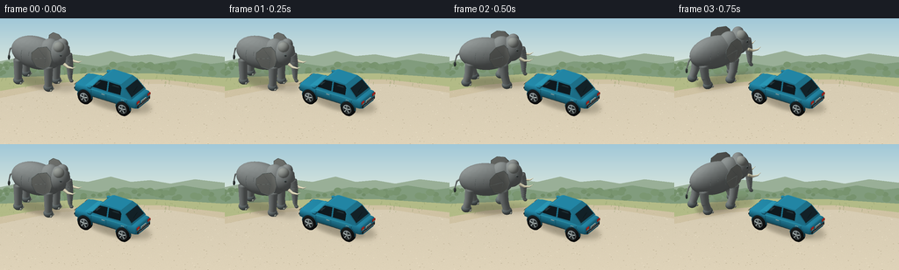
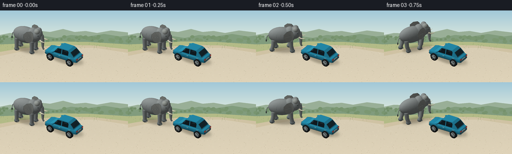
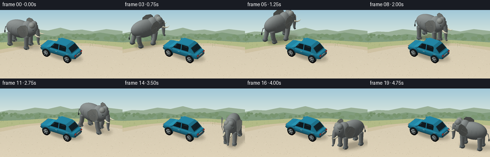
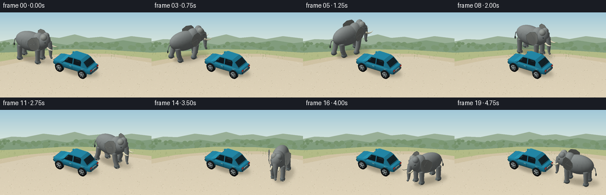

CODING AGENTS AS PIXEL WORLD MODELS
traex/GPT-6.1-Sol · dynamic_spatial_relationship_0063
点击播放 · 原生 RGB 像素
逐轮保存的候选
回放视频、检查图与代码变化。
每份候选均可单独播放。实际图片检查记录在下方工具轨迹中。
候选 01播放与检查图
点击播放 · 原生 RGB 像素


展开代码变化
--- 上一保存版本
+++ 本次保存版本
@@ -0,0 +1,391 @@
+"""Generate a miniature, softly lit RGB animation using only NumPy and Pillow.
+All meshes, shading, camera projection and rasterisation are defined here.
+"""
+from pathlib import Path
+import math
+import numpy as np
+from PIL import Image, ImageDraw, ImageFilter
+import artifact_io
+
+ROOT = Path(__file__).resolve().parent
+W,H = 256,144
+SS=3
+RW,RH=W*SS,H*SS
+SCALE=18.7*SS
+CAM=np.array([7.5,-12.0,8.1],float); CAM/=np.linalg.norm(CAM)
+RIGHT=np.cross([0,0,1],CAM); RIGHT/=np.linalg.norm(RIGHT)
+UP=np.cross(CAM,RIGHT)
+TARGET=np.array([0,0,1.0])
+LIGHT=np.array([-3.5,-4.5,8.0]);LIGHT/=np.linalg.norm(LIGHT)
+
+# Mesh construction. Vertex normals are retained for smooth lighting.
+class Scene:
+ def __init__(self): self.parts=[]
+ def mesh(self,v,f,color,n=None):
+ v=np.asarray(v,float); f=np.asarray(f,int)
+ if n is None:
+ n=np.zeros_like(v)
+ fn=np.cross(v[f[:,1]]-v[f[:,0]],v[f[:,2]]-v[f[:,0]])
+ for k in range(3): np.add.at(n,f[:,k],fn)
+ n/=np.maximum(np.linalg.norm(n,axis=1)[:,None],1e-8)
+ n=np.asarray(n,float)
+ c=np.array(color,float)
+ if c.ndim==1: c=np.broadcast_to(c,v.shape).copy()
+ self.parts.append((v,f,c,n))
+ def ellipsoid(self,center,radii,color,rotation=None,lat=14,lon=24,texture=0):
+ t=np.linspace(0,np.pi,lat+1); p=np.linspace(0,2*np.pi,lon,endpoint=False)
+ t,p=np.meshgrid(t,p,indexing='ij')
+ u=np.stack([np.sin(t)*np.cos(p),np.sin(t)*np.sin(p),np.cos(t)],-1).reshape(-1,3)
+ v=u*np.asarray(radii)
+ n=u/np.asarray(radii);n/=np.maximum(np.linalg.norm(n,axis=1)[:,None],1e-8)
+ if rotation is not None: v=v@rotation.T;n=n@rotation.T
+ v+=center
+ f=[]
+ for i in range(lat):
+ for j in range(lon):
+ a=i*lon+j;b=i*lon+(j+1)%lon;c=(i+1)*lon+j;d=(i+1)*lon+(j+1)%lon
+ f.extend([(a,c,b),(b,c,d)])
+ col=np.tile(np.asarray(color,float),(len(v),1))
+ if texture:
+ noise=(np.sin(p.reshape(-1)*17+t.reshape(-1)*38)*.6+np.cos(t.reshape(-1)*63)*.4)
+ col+=noise[:,None]*texture
+ self.mesh(v,f,col,n)
+ def tube(self,points,radii,color,sides=12):
+ pts=np.array(points,float);vs=[];ns=[]
+ for i,p in enumerate(pts):
+ delta=pts[min(i+1,len(pts)-1)]-pts[max(i-1,0)];delta/=max(np.linalg.norm(delta),1e-6)
+ ref=np.array([0.,0.,1.])
+ if abs(delta[2])>.91: ref=np.array([0.,1.,0.])
+ a=np.cross(delta,ref);a/=np.linalg.norm(a);b=np.cross(delta,a)
+ for j in range(sides):
+ n=a*np.cos(j*2*np.pi/sides)+b*np.sin(j*2*np.pi/sides)
+ vs.append(p+n*radii[i]);ns.append(n)
+ fs=[]
+ for i in range(len(pts)-1):
+ for j in range(sides):
+ a=i*sides+j;b=i*sides+(j+1)%sides;c=(i+1)*sides+j;d=(i+1)*sides+(j+1)%sides
+ fs.extend([(a,b,c),(b,d,c)])
+ # cap the ends
+ vs.extend([pts[0],pts[-1]]);ns.extend([-(pts[1]-pts[0])/np.linalg.norm(pts[1]-pts[0]),(pts[-1]-pts[-2])/np.linalg.norm(pts[-1]-pts[-2])])
+ for j in range(sides):
+ fs.extend([(len(vs)-2,(j+1)%sides,j),(len(vs)-1,(len(pts)-1)*sides+j,(len(pts)-1)*sides+(j+1)%sides)])
+ self.mesh(vs,fs,color,ns)
+ def quad(self,vertices,color):
+ self.mesh(vertices,[(0,1,2),(0,2,3)],color)
+ def box(self,lo,hi,color):
+ x,y,z=lo;X,Y,Z=hi
+ for face in [ [(x,y,z),(x,Y,z),(X,Y,z),(X,y,z)],[(x,y,Z),(X,y,Z),(X,Y,Z),(x,Y,Z)],[(x,y,z),(X,y,z),(X,y,Z),(x,y,Z)],[(X,Y,z),(x,Y,z),(x,Y,Z),(X,Y,Z)],[(X,y,z),(X,Y,z),(X,Y,Z),(X,y,Z)],[(x,Y,z),(x,y,z),(x,y,Z),(x,Y,Z)] ]:
+ self.quad(face,color)
+
+
+def project(v):
+ rel=np.asarray(v)-TARGET
+ return np.stack([RW/2+rel@RIGHT*SCALE,RH*.56-rel@UP*SCALE,rel@CAM],-1)
+
+
+def raster(scene,background):
+ image=np.array(background,dtype=float)
+ depth=np.full((RH,RW),-1e10,float)
+ for verts,faces,colors,normals in scene.parts:
+ p=project(verts)
+ # diffuse illumination with a warm key and a cool, soft sky fill.
+ lit=np.maximum(normals@LIGHT,0)
+ skylight=np.clip(normals[:,2]*.5+.5,0,1)
+ shade=.40+.54*lit+.12*skylight
+ rgb=colors*shade[:,None]
+ rgb+=np.maximum(normals@np.array([.4,.3,.866]),0)[:,None]**14*3
+ for ia,ib,ic in faces:
+ q=p[[ia,ib,ic]]
+ x0=max(0,int(np.floor(q[:,0].min())));x1=min(RW-1,int(np.ceil(q[:,0].max())))
+ y0=max(0,int(np.floor(q[:,1].min())));y1=min(RH-1,int(np.ceil(q[:,1].max())))
+ if x0>x1 or y0>y1:continue
+ a,b,c=q
+ det=(b[1]-c[1])*(a[0]-c[0])+(c[0]-b[0])*(a[1]-c[1])
+ if abs(det)<1e-8:continue
+ xx=np.arange(x0,x1+1)[None,:]+.5; yy=np.arange(y0,y1+1)[:,None]+.5
+ u=((b[1]-c[1])*(xx-c[0])+(c[0]-b[0])*(yy-c[1]))/det
+ vv=((c[1]-a[1])*(xx-c[0])+(a[0]-c[0])*(yy-c[1]))/det
+ ww=1-u-vv
+ zz=u*a[2]+vv*b[2]+ww*c[2]
+ d=depth[y0:y1+1,x0:x1+1]
+ ok=(u>=-1e-6)&(vv>=-1e-6)&(ww>=-1e-6)&(zz>d)
+ if not ok.any():continue
+ d[ok]=zz[ok]
+ ca,cb,cc=rgb[[ia,ib,ic]]
+ val=u[:,:,None]*ca+vv[:,:,None]*cb+ww[:,:,None]*cc
+ image[y0:y1+1,x0:x1+1][ok]=val[ok]
+ return Image.fromarray(np.uint8(np.clip(image,0,255)))
+
+
+BLUE=(36,139,171);DARKBLUE=(27,100,125);GLASS=(35,58,68)
+def add_car(s):
+ # Rounded lower body, smoothly lofted from nose to rear.
+ profile=[(-2.27,.66,.96),(-2.18,.82,1.08),(-1.85,.91,1.12),(-1.0,.93,1.18),(.1,.94,1.2),(1.35,.94,1.20),(2.12,.85,1.17),(2.22,.77,1.06)]
+ v=[]
+ for x,w,top in profile:
+ v.extend([(x,-w*.78,.56),(x,-w,.66),(x,-w,top-.12),(x,-w*.86,top),(x,w*.86,top),(x,w,top-.12),(x,w,.66),(x,w*.78,.56)])
+ faces=[]
+ for i in range(len(profile)-1):
+ for j in range(8):
+ a=i*8+j;b=i*8+(j+1)%8;c=(i+1)*8+j;d=(i+1)*8+(j+1)%8
+ faces.extend([(a,c,b),(b,c,d)])
+ s.mesh(v,faces,BLUE)
+ for idx in [0,len(profile)-1]:
+ pts=v[idx*8:idx*8+8];s.mesh(pts,[(0,k,k+1) for k in range(1,7)],BLUE)
+ # Hood, body belt and rocker trim.
+ s.quad([(-2.1,-.70,1.075),(-1.02,-.78,1.2),(-1.02,.78,1.2),(-2.1,.70,1.075)],(42,154,184))
+ for y in [-.944,.944]:
+ s.tube([(-1.8,y,.68),(1.87,y,.68)],[.025,.025],(36,66,73),8)
+ # Cabin, tapered into a rounded roof.
+ stations=[(-1.03,.795,1.17),(-.48,.685,1.88),(-.28,.68,1.965),(1.04,.67,1.96),(1.34,.735,1.78),(1.90,.80,1.21)]
+ for i in range(len(stations)-1):
+ x,w,z=stations[i];X,Wd,Z=stations[i+1]
+ # top includes metal surrounds of the front and rear windscreen
+ s.quad([(x,-w,z),(X,-Wd,Z),(X,Wd,Z),(x,w,z)],BLUE)
+ for sign in [-1,1]:
+ s.quad([(x,sign*.83,1.15),(X,sign*.83,1.15),(X,sign*Wd,Z),(x,sign*w,z)],BLUE)
+ # Inclined front and rear glass, with visible gloss.
+ s.quad([(-1.008,-.70,1.25),(-.51,-.62,1.865),(-.51,.62,1.865),(-1.008,.70,1.25)],(45,76,88))
+ s.quad([(1.37,-.661,1.769),(1.826,-.716,1.30),(1.826,.716,1.30),(1.37,.661,1.769)],(27,49,58))
+ s.tube([(1.72,-.35,1.446),(1.65,.22,1.546)],[.014,.014],(15,26,28),6)
+ # Side windows (each slightly proud of the painted body).
+ for sign in [-1,1]:
+ s.quad([(-.927,sign*.833,1.28),(-.448,sign*.707,1.85),(.10,sign*.698,1.88),(.10,sign*.836,1.28)],GLASS)
+ s.quad([(.21,sign*.835,1.28),(.21,sign*.699,1.88),(1.00,sign*.698,1.87),(1.45,sign*.797,1.28)],GLASS)
+ # soft reflected sky highlights on glass
+ s.quad([(-.75,sign*.801,1.47),(-.45,sign*.706,1.82),(-.30,sign*.705,1.84),(-.59,sign*.800,1.49)],(86,120,131))
+ s.quad([(.32,sign*.718,1.79),(.9,sign*.718,1.79),(.96,sign*.739,1.7),(.32,sign*.739,1.7)],(67,102,114))
+ s.tube([(-.95,sign*.934,1.13),(.16,sign*.949,1.14),(1.65,sign*.910,1.14)],[.017,.017,.017],(58,172,194),8)
+ # vertical door seams and satin handles
+ for x in [.15,1.59,-.93]:
+ yy=.95 if x<1.4 else .924
+ s.tube([(x,sign*yy,.74),(x,sign*yy,1.11)],[.010,.010],(25,97,116),6)
+ for x in [-.05,1.34]:
+ s.box((x-.13,sign*.96-.017,1.025),(x+.10,sign*.96+.017,1.07),(155,188,191))
+ s.tube([(-.92,sign*.85,1.3),(-.92,sign*1.12,1.38)],[.04,.045],DARKBLUE,8)
+ s.ellipsoid((-.94,sign*1.13,1.39),(.17,.11,.10),BLUE,lat=8,lon=12)
+ # Front and rear bumpers, lamps and plates. Rear is +X.
+ s.box((2.21,-.72,.66),(2.265,.72,.81),(42,54,59))
+ s.box((2.264,-.6,.704),(2.279,.6,.746),(168,187,187))
+ for yy in [-.62,.62]:
+ s.box((2.215,yy-.14,.92),(2.26,yy+.14,1.08),(178,28,29))
+ s.box((2.26,yy-.125,.99),(2.28,yy+.125,1.056),(250,71,56))
+ s.box((2.26,yy-.09,.929),(2.278,yy+.09,.956),(255,194,135))
+ s.box((2.227,-.28,.825),(2.26,.28,.958),(218,225,215))
+ # Small realistic registration marks rather than any scene labels.
+ for y in np.linspace(-.20,.18,6):
+ s.box((2.261,y,.856),(2.266,y+.025,.920),(39,49,53))
+ s.box((-2.3,-.72,.67),(-2.255,.72,.78),(58,64,64))
+ s.box((-2.289,-.34,.835),(-2.27,.34,.975),(37,49,56))
+ for yy in [-.61,.61]:
+ s.box((-2.293,yy-.15,.95),(-2.265,yy+.15,1.057),(242,238,199))
+ # Four cylindrical tyres, alloy rims and five radial spokes.
+ for x in [-1.37,1.38]:
+ for sign in [-1,1]:
+ y=sign*.91
+ s.tube([(x,y-sign*.10,.49),(x,y+sign*.14,.49)],[.47,.47],(27,30,31),28)
+ s.tube([(x,y+sign*.141,.49),(x,y+sign*.159,.49)],[.305,.305],(151,163,166),24)
+ s.tube([(x,y+sign*.162,.49),(x,y+sign*.169,.49)],[.242,.242],(49,57,60),24)
+ for j in range(5):
+ angle=j*2*np.pi/5+.3
+ s.tube([(x+.08*np.cos(angle),y+sign*.181,.49+.08*np.sin(angle)),(x+.253*np.cos(angle),y+sign*.181,.49+.253*np.sin(angle))],[.042,.043],(194,206,205),6)
+ s.tube([(x,y+sign*.185,.49),(x,y+sign*.20,.49)],[.083,.083],(190,202,202),16)
+ # Wheel arch lip is open below.
+ pts=[(x+.515*np.cos(a),sign*.971,.50+.515*np.sin(a)) for a in np.linspace(0,np.pi,20)]
+ s.tube(pts,[.036]*len(pts),DARKBLUE,8)
+
+
+def rotation(a):
+ return np.array([[np.cos(a),-np.sin(a),0],[np.sin(a),np.cos(a),0],[0,0,1]])
+
+# Elephant model built in its own forward-X coordinate system.
+def add_elephant(scene,pos,heading,t,moving):
+ e=Scene();r=rotation(heading)
+ phase=t*2*np.pi*1.75
+ bob=.036*np.sin(phase*2)*moving
+ skin=(139,145,144);dark=(112,122,123);light=(151,156,151)
+ e.ellipsoid((-.22,0,2.12+bob),(1.62,.83,1.05),skin,lat=22,lon=36,texture=2.2)
+ e.ellipsoid((.77,0,2.31+bob),(.77,.72,.99),skin,lat=18,lon=28,texture=1.7)
+ e.ellipsoid((1.35,0,2.51+bob),(.69,.65,.81),skin,lat=18,lon=30,texture=2)
+ # Forehead twin domes help give the characteristic elephant silhouette.
+ e.ellipsoid((1.45,-.24,3.015+bob),(.36,.35,.36),light,lat=12,lon=20)
+ e.ellipsoid((1.45,.24,3.015+bob),(.36,.35,.36),skin,lat=12,lon=20)
+ # Legs, with diagonally alternating planted and lifted feet.
+ for ix,x in enumerate([-1.17,.88]):
+ for iy,y in enumerate([-.54,.54]):
+ ph=phase+(0 if (ix+iy)%2==0 else np.pi)
+ swing=.30*np.sin(ph)*moving
+ lift=.17*max(0,np.cos(ph))*moving
+ top=(x,y,1.66+bob)
+ knee=(x+swing*.33,y, .86+lift*.45)
+ ankle=(x+swing,y,.29+lift)
+ e.tube([top,knee,ankle],[.29,.25,.23],skin,16)
+ e.ellipsoid(knee,(.255,.247,.31),skin,lat=10,lon=16,texture=1)
+ e.ellipsoid((x+swing,y,.22+lift),(.31,.272,.255),dark,lat=10,lon=18)
+ # Rounded pale toenails at the front of each broad foot.
+ for dy in [-.15,0,.15]:
+ e.ellipsoid((x+swing+.255,y+dy,.14+lift),(.070,.060,.078),(174,180,170),lat=6,lon=8)
+ # Broad African ears, gently curved rather than flat circles.
+ for sign in [1,-1]:
+ flap=.045*np.sin(phase*.6+sign)*moving
+ center=np.array([1.04,sign*.65,2.5+bob])
+ outline=np.array([[-.13,0,.75],[-.61,.03,.67],[-.97,.07,.31],[-.98,.10,-.14],[-.70,.08,-.68],[-.28,0,-.83],[.10,-.04,-.54],[.25,-.08,-.06],[.12,-.045,.49]])
+ # Ears spread laterally and droop along the cheek.
+ vs=[center+[-.14,sign*(.27+flap),0]]
+ for q in outline:
+ vs.append(center+[q[0],sign*(.14+.42*abs(q[0])+flap),q[2]])
+ faces=[(0,j+1,(j+1)%len(outline)+1) for j in range(len(outline))]
+ cols=[(139,143,139)]+[(148+int(q[2]*6),151+int(q[2]*6),145+int(q[2]*6)) for q in outline]
+ e.mesh(vs,faces,cols)
+ # slender ear rim and a few subtle radial creases
+ edge=vs[1:]+[vs[1]]
+ e.tube(edge,[.018]*len(edge),(121,131,129),6)
+ for j in [1,3,5]:
+ a=np.array(vs[0]);b=np.array(vs[j+1]);m=a*.55+b*.45;m[1]+=sign*.022
+ e.tube([a+[0,sign*.022,0],m,b],[.010,.009,.005],(124,134,131),5)
+ # Long tapering trunk, mildly swaying with the walk and curled at its tip.
+ sway=.10*np.sin(phase*.55)*moving
+ trunk=[]
+ for i in range(15):
+ u=i/14
+ x=1.91+.16*np.sin(u*np.pi)+.28*u**5
+ y=sway*u
+ z=2.50-1.91*u+.15*u**8+bob
+ trunk.append((x,y,z))
+ rr=np.linspace(.30,.093,len(trunk))
+ e.tube(trunk,rr,skin,18)
+ e.ellipsoid(trunk[-1],(.12,.108,.10),dark,lat=8,lon=12)
+ # Transverse fine trunk folds catch the side light.
+ for k in range(2,13):
+ p=np.array(trunk[k]);radius=rr[k]+.002
+ fold=[p+[radius*np.cos(a),radius*np.sin(a),0] for a in np.linspace(-2.6,.3,9)]
+ e.tube(fold,[.010]*len(fold),(115,126,125),5)
+ # Two ivory tusks, gently curved upward.
+ for sign in [-1,1]:
+ pts=[(1.86,sign*.39,2.05+bob),(2.15,sign*.41,1.90+bob),(2.48,sign*.415,1.91+bob),(2.70,sign*.415,2.06+bob)]
+ e.tube(pts,[.105,.079,.045,.004],(237,231,200),14)
+ # Eyes appear in front of the ear, not on the trunk.
+ for sign in [-1,1]:
+ e.ellipsoid((1.69,sign*.522,2.69+bob),(.127,.055,.094),dark,lat=8,lon=12)
+ e.ellipsoid((1.73,sign*.561,2.699+bob),(.045,.025,.043),(25,31,31),lat=8,lon=12)
+ e.ellipsoid((1.741,sign*.579,2.72+bob),(.013,.008,.013),(240,239,217),lat=6,lon=8)
+ e.tube([(1.62,sign*.547,2.794+bob),(1.73,sign*.566,2.783+bob),(1.8,sign*.525,2.757+bob)],[.021,.019,.013],(119,129,127),6)
+ # Thin tail with a dark bristly tip.
+ tw=.15*np.sin(phase*.55)*moving
+ tail=[(-1.74,0,2.14+bob),(-1.98,.02+tw,1.94+bob),(-2.08,.05+tw,1.52+bob),(-2.10,.08+tw,1.29+bob)]
+ e.tube(tail,[.061,.052,.034,.020],skin,10)
+ e.ellipsoid(tail[-1],(.075,.077,.18),(73,82,81),lat=8,lon=12)
+ # A handful of very subtle skin folds along the flank and shoulder.
+ for xx in [-.8,-.3,.2]:
+ for sign in [-1,1]:
+ pts=[(xx-.04*np.sin(u*np.pi),sign*(.812-.09*(u-.5)**2),1.87+u*.69+bob) for u in np.linspace(0,1,6)]
+ e.tube(pts,[.009]*6,(126,137,136),5)
+ p=np.array([pos[0],pos[1],0])
+ for v,f,c,n in e.parts:
+ scene.mesh(v@r.T+p,f,c,n@r.T)
+
+
+def background():
+ # Quiet countryside with warm sandy turnout and an uncluttered composition.
+ rng=np.random.default_rng(87)
+ yy=np.arange(RH)[:,None]/SS
+ sky_top=np.array([161,200,216]);sky_low=np.array([224,234,222])
+ sky=np.clip(yy/61,0,1)
+ rgb=np.tile((sky_top[None,None,:]*(1-sky[:,:,None])+sky_low[None,None,:]*sky[:,:,None]),(1,RW,1))
+ im=Image.fromarray(np.uint8(rgb));d=ImageDraw.Draw(im)
+ def poly(points,fill):d.polygon([(x*SS,y*SS) for x,y in points],fill=fill)
+ # Low hazy hills, distant tree line and meadow.
+ poly([(0,49),(20,45),(43,46),(73,40),(100,43),(126,37),(149,43),(171,41),(194,45),(222,40),(256,44),(256,89),(0,89)],(153,175,151))
+ poly([(0,57),(33,52),(56,55),(81,50),(113,55),(142,49),(175,52),(208,47),(240,52),(256,50),(256,97),(0,97)],(129,156,125))
+ for i in range(63):
+ x=rng.uniform(-5,261);y=rng.uniform(53,65);r=rng.uniform(2,5)
+ d.ellipse(((x-r)*SS,(y-r)*SS,(x+r)*SS,(y+r*.5)*SS),fill=(int(104+r*4),int(132+r*4),int(95+r*4)))
+ poly([(0,68),(50,66),(108,62),(177,63),(256,68),(256,144),(0,144)],(179,187,135))
+ # broad pale gravel verge, running below the tree line
+ poly([(0,83),(41,76),(121,69),(186,70),(256,78),(256,144),(0,144)],(208,195,164))
+ poly([(0,91),(64,78),(126,74),(191,75),(256,85),(256,144),(0,144)],(216,205,180))
+ arr=np.array(im).astype(float)
+ y=np.arange(RH)[:,None]/SS
+ arr+=((y-89)/55).clip(0,1)[:,:,None]*np.array([7,6,5])
+ # Fine stable material noise, far less than one pixel in final output.
+ noise=rng.normal(0,1.4,(RH,RW,1));arr+=noise*(y>77)[:,:,None]
+ im=Image.fromarray(np.uint8(np.clip(arr,0,255)));d=ImageDraw.Draw(im)
+ for i in range(390):
+ x=rng.uniform(0,256);y=rng.uniform(79,144)
+ size=rng.uniform(.18,.65)*(y/130)
+ col=(194,182,154) if i%3 else (233,222,197)
+ d.ellipse((x*SS,y*SS,(x+size*1.8)*SS,(y+size*.45)*SS),fill=col)
+ for i in range(72):
+ x=rng.uniform(0,256);y=rng.uniform(68,80)
+ d.line([(x*SS,y*SS),((x+rng.uniform(-.7,.7))*SS,(y-rng.uniform(1,2.9))*SS)],fill=(142,158,107),width=SS//2)
+ # Two out-of-focus border clusters anchor the scenic clearing.
+ return im
+
+
+def add_shadow(base,center,heading,elephant=False):
+ mask=Image.new('L',(RW,RH));d=ImageDraw.Draw(mask)
+ if elephant:
+ shape=[(-.25,0,1.65,.86,75),(1.17,0,.72,.64,64)]
+ else: shape=[(0,0,2.12,1.02,80)]
+ R=rotation(heading)
+ for x,y,rx,ry,alpha in shape:
+ points=[]
+ for a in np.linspace(0,2*np.pi,65):
+ v=np.array([x+rx*np.cos(a),y+ry*np.sin(a),0])@R.T
+ v+=np.array([center[0]+.35,center[1]+.36,0])
+ pp=project([v])[0];points.append(tuple(pp[:2]))
+ d.polygon(points,fill=alpha)
+ mask=mask.filter(ImageFilter.GaussianBlur(2.7*SS))
+ base=Image.composite(Image.new('RGB',(RW,RH),(82,76,60)),base,mask)
+ # Concentrated, soft contact shadow.
+ contact=Image.new('L',(RW,RH));dd=ImageDraw.Draw(contact)
+ points=[]
+ rx,ry=(1.4,.61) if elephant else (1.9,.8)
+ for a in np.linspace(0,2*np.pi,65):
+ v=np.array([rx*np.cos(a),ry*np.sin(a),0])@R.T+np.array([*center,0]);points.append(tuple(project([v])[0,:2]))
+ dd.polygon(points,fill=50);contact=contact.filter(ImageFilter.GaussianBlur(1.2*SS))
+ return Image.composite(Image.new('RGB',(RW,RH),(94,86,69)),base,contact)
+
+# A continuous rounded route goes around the far side, then approaches the rear.
+WAYPOINTS=np.array([[-5.05,-.32],[-4.65,1.3],[-3.45,2.95],[-1.15,3.12],[1.35,3.06],[3.6,2.75],[5.25,1.85],[5.5,.18]])
+
+def spline(u):
+ k=min(len(WAYPOINTS)-2,int(u*(len(WAYPOINTS)-1)))
+ t=u*(len(WAYPOINTS)-1)-k
+ p0=WAYPOINTS[max(0,k-1)];p1=WAYPOINTS[k];p2=WAYPOINTS[k+1];p3=WAYPOINTS[min(len(WAYPOINTS)-1,k+2)]
+ return .5*((2*p1)+(-p0+p2)*t+(2*p0-5*p1+4*p2-p3)*t*t+(-p0+3*p1-3*p2+p3)*t*t*t)
+
+
+def main():
+ bg=background();frames=[]
+ # Resample the path by distance so the walk does not speed up on corners.
+ us=np.linspace(0,1,601);positions=np.array([spline(u) for u in us])
+ distance=np.r_[0,np.cumsum(np.linalg.norm(np.diff(positions,axis=0),axis=1))];distance/=distance[-1]
+ car=Scene();add_car(car)
+ for i in range(20):
+ t=i/4
+ progress=np.clip((i-1.5)/15.5,0,1)
+ # Ease start and stop, without excessive sliding.
+ progress=progress*progress*(3-2*progress)
+ u=np.interp(progress,distance,us);pos=spline(u)
+ delta=spline(min(1,u+.002))-spline(max(0,u-.002))
+ natural=math.atan2(delta[1],delta[0])
+ # Start in a three-quarter profile, then turn into the walk. Final turn
+ # leaves the elephant facing the car's rear with a clear separation.
+ if i<4:
+ w=np.clip((i-1)/3,0,1);heading=.10*(1-w)+natural*w
+ else: heading=natural
+ if i>15:
+ w=np.clip((i-15)/3,0,1);heading=heading*(1-w)+(-2.90)*w
+ moving=1.0 if 2<=i<=16 else (.30 if i in [1,17] else 0)
+ scene=Scene();scene.parts=list(car.parts)
+ add_elephant(scene,pos,heading,t,moving)
+ back=add_shadow(bg,(0,0),0)
+ back=add_shadow(back,pos,heading,True)
+ frame=raster(scene,back)
+ frame=frame.resize((W,H),Image.Resampling.LANCZOS)
+ frames.append(np.array(frame.convert('RGB'),dtype=np.uint8))
+ print(f'frame {i+1}/20',flush=True)
+ artifact_io.save(np.stack(frames),ROOT)
+
+if __name__=='__main__':main()
候选 02播放与检查图
点击播放 · 原生 RGB 像素


展开代码变化
--- 上一保存版本
+++ 本次保存版本
@@ -11,7 +11,7 @@
W,H = 256,144
SS=3
RW,RH=W*SS,H*SS
-SCALE=18.7*SS
+SCALE=16.5*SS
CAM=np.array([7.5,-12.0,8.1],float); CAM/=np.linalg.norm(CAM)
RIGHT=np.cross([0,0,1],CAM); RIGHT/=np.linalg.norm(RIGHT)
UP=np.cross(CAM,RIGHT)
@@ -80,7 +80,7 @@
def project(v):
rel=np.asarray(v)-TARGET
- return np.stack([RW/2+rel@RIGHT*SCALE,RH*.56-rel@UP*SCALE,rel@CAM],-1)
+ return np.stack([RW/2+rel@RIGHT*SCALE,RH*.59-rel@UP*SCALE,rel@CAM],-1)
def raster(scene,background):
可观测工具轨迹
实际执行的命令与返回图片。
命令 1exit 0
/bin/bash -lc 'ls -la && cat prompt.txt && cat GENERATION_RULES.md && cat task_spec.json'
命令 2exit 0
/bin/bash -lc "cat artifact_io.py && python - <<'PY'
import PIL,numpy
print('ready')
PY"命令 3exit 1
/bin/bash -lc "cat > generate.py <<'PY'
\"\"\"Generate a miniature, softly lit RGB animation using only NumPy and Pillow.
All meshes, shading, camera projection and rasterisation are defined here.
\"\"\"
from pathlib import Path
import math
import numpy as np
from PIL import Image, ImageDraw, ImageFilter
import artifact_io
ROOT = Path(__file__).resolve().parent
W,H = 256,144
SS=3
RW,RH=W*SS,H*SS
SCALE=18.7*SS
CAM=np.array([7.5,-12.0,8.1],float); CAM/=np.linalg.norm(CAM)
RIGHT=np.cross([0,0,1],CAM); RIGHT/=np.linalg.norm(RIGHT)
UP=np.cross(CAM,RIGHT)
TARGET=np.array([0,0,1.0])
LIGHT=np.array([-3.5,-4.5,8.0]);LIGHT/=np.linalg.norm(LIGHT)
# Mesh construction. Vertex normals are retained for smooth lighting.
class Scene:
def __init__(self): self.parts=[]
def mesh(self,v,f,color,n=None):
v=np.asarray(v,float); f=np.asarray(f,int)
if n is None:
n=np.zeros_like(v)
fn=np.cross(v[f[:,1]]-v[f[:,0]],v[f[:,2]]-v[f[:,0]])
for k in range(3): np.add.at(n,f[:,k],fn)
n/=np.maximum(np.linalg.norm(n,axis=1)[:,None],1e-8)
c=np.array(color,float)
if c.ndim==1: c=np.broadcast_to(c,v.shape).copy()
self.parts.append((v,f,c,n))
def ellipsoid(self,center,radii,color,rotation=None,lat=14,lon=24,texture=0):
t=np.linspace(0,np.pi,lat+1); p=np.linspace(0,2*np.pi,lon,endpoint=False)
t,p=np.meshgrid(t,p,indexing='ij')
u=np.stack([np.sin(t)*np.cos(p),np.sin(t)*np.sin(p),np.cos(t)],-1).reshape(-1,3)
v=u*np.asarray(radii)
n=u/np.asarray(radii);n/=np.maximum(np.linalg.norm(n,axis=1)[:,None],1e-8)
if rotation is not None: v=v@rotation.T;n=n@rotation.T
v+=center
f=[]
for i in range(lat):
for j in range(lon):
a=i*lon+j;b=i*lon+(j+1)%lon;c=(i+1)*lon+j;d=(i+1)*lon+(j+1)%lon
f.extend([(a,c,b),(b,c,d)])
col=np.tile(np.asarray(color,float),(len(v),1))
if texture:
noise=(np.sin(p.reshape(-1)*17+t.reshape(-1)*38)*.6+np.cos(t.reshape(-1)*63)*.4)
col+=noise[:,None]*texture
self.mesh(v,f,col,n)
def tube(self,points,radii,color,sides=12):
pts=np.array(points,float);vs=[];ns=[]
for i,p in enumerate(pts):
delta=pts[min(i+1,len(pts)-1)]-pts[max(i-1,0)];delta/=max(np.linalg.norm(delta),1e-6)
ref=np.array([0.,0.,1.])
if abs(delta[2])>.91: ref=np.array([0.,1.,0.])
a=np.cross(delta,ref);a/=np.linalg.norm(a);b=np.cross(delta,a)
for j in range(sides):
n=a*np.cos(j*2*np.pi/sides)+b*np.sin(j*2*np.pi/sides)
vs.append(p+n*radii[i]);ns.append(n)
fs=[]
for i in range(len(pts)-1):
for j in range(sides):
a=i*sides+j;b=i*sides+(j+1)%sides;c=(i+1)*sides+j;d=(i+1)*sides+(j+1)%sides
fs.extend([(a,b,c),(b,d,c)])
# cap the ends
vs.extend([pts[0],pts[-1]]);ns.extend([-(pts[1]-pts[0])/np.linalg.norm(pts[1]-pts[0]),(pts[-1]-pts[-2])/np.linalg.norm(pts[-1]-pts[-2])])
for j in range(sides):
fs.extend([(len(vs)-2,(j+1)%sides,j),(len(vs)-1,(len(pts)-1)*sides+j,(len(pts)-1)*sides+(j+1)%sides)])
self.mesh(vs,fs,color,ns)
def quad(self,vertices,color):
self.mesh(vertices,[(0,1,2),(0,2,3)],color)
def box(self,lo,hi,color):
x,y,z=lo;X,Y,Z=hi
for face in [ [(x,y,z),(x,Y,z),(X,Y,z),(X,y,z)],[(x,y,Z),(X,y,Z),(X,Y,Z),(x,Y,Z)],[(x,y,z),(X,y,z),(X,y,Z),(x,y,Z)],[(X,Y,z),(x,Y,z),(x,Y,Z),(X,Y,Z)],[(X,y,z),(X,Y,z),(X,Y,Z),(X,y,Z)],[(x,Y,z),(x,y,z),(x,y,Z),(x,Y,Z)] ]:
self.quad(face,color)
def project(v):
rel=np.asarray(v)-TARGET
return np.stack([RW/2+rel@RIGHT*SCALE,RH*.56-rel@UP*SCALE,rel@CAM],-1)
def raster(scene,background):
image=np.array(background,dtype=float)
depth=np.full((RH,RW),-1e10,float)
for verts,faces,colors,normals in scene.parts:
p=project(verts)
# diffuse illumination with a warm key and a cool, soft sky fill.
lit=np.maximum(normals@LIGHT,0)
skylight=np.clip(normals[:,2]*.5+.5,0,1)
shade=.40+.54*lit+.12*skylight
rgb=colors*shade[:,None]
rgb+=np.maximum(normals@np.array([.4,.3,.866]),0)[:,None]**14*3
for ia,ib,ic in faces:
q=p[[ia,ib,ic]]
x0=max(0,int(np.floor(q[:,0].min())));x1=min(RW-1,int(np.ceil(q[:,0].max())))
y0=max(0,int(np.floor(q[:,1].min())));y1=min(RH-1,int(np.ceil(q[:,1].max())))
if x0>x1 or y0>y1:continue
a,b,c=q
det=(b[1]-c[1])*(a[0]-c[0])+(c[0]-b[0])*(a[1]-c[1])
if abs(det)<1e-8:continue
xx=np.arange(x0,x1+1)[None,:]+.5; yy=np.arange(y0,y1+1)[:,None]+.5
u=((b[1]-c[1])*(xx-c[0])+(c[0]-b[0])*(yy-c[1]))/det
vv=((c[1]-a[1])*(xx-c[0])+(a[0]-c[0])*(yy-c[1]))/det
ww=1-u-vv
zz=u*a[2]+vv*b[2]+ww*c[2]
d=depth[y0:y1+1,x0:x1+1]
ok=(u>=-1e-6)&(vv>=-1e-6)&(ww>=-1e-6)&(zz>d)
if not ok.any():continue
d[ok]=zz[ok]
ca,cb,cc=rgb[[ia,ib,ic]]
val=u[:,:,None]*ca+vv[:,:,None]*cb+ww[:,:,None]*cc
image[y0:y1+1,x0:x1+1][ok]=val[ok]
return Image.fromarray(np.uint8(np.clip(image,0,255)))
BLUE=(36,139,171);DARKBLUE=(27,100,125);GLASS=(35,58,68)
def add_car(s):
# Rounded lower body, smoothly lofted from nose to rear.
profile=[(-2.27,.66,.96),(-2.18,.82,1.08),(-1.85,.91,1.12),(-1.0,.93,1.18),(.1,.94,1.2),(1.35,.94,1.20),(2.12,.85,1.17),(2.22,.77,1.06)]
v=[]
for x,w,top in profile:
v.extend([(x,-w*.78,.56),(x,-w,.66),(x,-w,top-.12),(x,-w*.86,top),(x,w*.86,top),(x,w,top-.12),(x,w,.66),(x,w*.78,.56)])
faces=[]
for i in range(len(profile)-1):
for j in range(8):
a=i*8+j;b=i*8+(j+1)%8;c=(i+1)*8+j;d=(i+1)*8+(j+1)%8
faces.extend([(a,c,b),(b,c,d)])
s.mesh(v,faces,BLUE)
for idx in [0,len(profile)-1]:
pts=v[idx*8:idx*8+8];s.mesh(pts,[(0,k,k+1) for k in range(1,7)],BLUE)
# Hood, body belt and rocker trim.
s.quad([(-2.1,-.70,1.075),(-1.02,-.78,1.2),(-1.02,.78,1.2),(-2.1,.70,1.075)],(42,154,184))
for y in [-.944,.944]:
s.tube([(-1.8,y,.68),(1.87,y,.68)],[.025,.025],(36,66,73),8)
# Cabin, tapered into a rounded roof.
stations=[(-1.03,.795,1.17),(-.48,.685,1.88),(-.28,.68,1.965),(1.04,.67,1.96),(1.34,.735,1.78),(1.90,.80,1.21)]
for i in range(len(stations)-1):
x,w,z=stations[i];X,Wd,Z=stations[i+1]
# top includes metal surrounds of the front and rear windscreen
s.quad([(x,-w,z),(X,-Wd,Z),(X,Wd,Z),(x,w,z)],BLUE)
for sign in [-1,1]:
s.quad([(x,sign*.83,1.15),(X,sign*.83,1.15),(X,sign*Wd,Z),(x,sign*w,z)],BLUE)
# Inclined front and rear glass, with visible gloss.
s.quad([(-1.008,-.70,1.25),(-.51,-.62,1.865),(-.51,.62,1.865),(-1.008,.70,1.25)],(45,76,88))
s.quad([(1.37,-.661,1.769),(1.826,-.716,1.30),(1.826,.716,1.30),(1.37,.661,1.769)],(27,49,58))
s.tube([(1.72,-.35,1.446),(1.65,.22,1.546)],[.014,.014],(15,26,28),6)
# Side windows (each slightly proud of the painted body).
for sign in [-1,1]:
s.quad([(-.927,sign*.833,1.28),(-.448,sign*.707,1.85),(.10,sign*.698,1.88),(.10,sign*.836,1.28)],GLASS)
s.quad([(.21,sign*.835,1.28),(.21,sign*.699,1.88),(1.00,sign*.698,1.87),(1.45,sign*.797,1.28)],GLASS)
# soft reflected sky highlights on glass
s.quad([(-.75,sign*.801,1.47),(-.45,sign*.706,1.82),(-.30,sign*.705,1.84),(-.59,sign*.800,1.49)],(86,120,131))
s.quad([(.32,sign*.718,1.79),(.9,sign*.718,1.79),(.96,sign*.739,1.7),(.32,sign*.739,1.7)],(67,102,114))
s.tube([(-.95,sign*.934,1.13),(.16,sign*.949,1.14),(1.65,sign*.910,1.14)],[.017,.017,.017],(58,172,194),8)
# vertical door seams and satin handles
for x in [.15,1.59,-.93]:
yy=.95 if x<1.4 else .924
s.tube([(x,sign*yy,.74),(x,sign*yy,1.11)],[.010,.010],(25,97,116),6)
for x in [-.05,1.34]:
s.box((x-.13,sign*.96-.017,1.025),(x+.10,sign*.96+.017,1.07),(155,188,191))
s.tube([(-.92,sign*.85,1.3),(-.92,sign*1.12,1.38)],[.04,.045],DARKBLUE,8)
s.ellipsoid((-.94,sign*1.13,1.39),(.17,.11,.10),BLUE,lat=8,lon=12)
# Front and rear bumpers, lamps and plates. Rear is +X.
s.box((2.21,-.72,.66),(2.265,.72,.81),(42,54,59))
s.box((2.264,-.6,.704),(2.279,.6,.746),(168,187,187))
for yy in [-.62,.62]:
s.box((2.215,yy-.14,.92),(2.26,yy+.14,1.08),(178,28,29))
s.box((2.26,yy-.125,.99),(2.28,yy+.125,1.056),(250,71,56))
s.box((2.26,yy-.09,.929),(2.278,yy+.09,.956),(255,194,135))
s.box((2.227,-.28,.825),(2.26,.28,.958),(218,225,215))
# Small realistic registration marks rather than any scene labels.
for y in np.linspace(-.20,.18,6):
s.box((2.261,y,.856),(2.266,y+.025,.920),(39,49,53))
s.box((-2.3,-.72,.67),(-2.255,.72,.78),(58,64,64))
s.box((-2.289,-.34,.835),(-2.27,.34,.975),(37,49,56))
for yy in [-.61,.61]:
s.box((-2.293,yy-.15,.95),(-2.265,yy+.15,1.057),(242,238,199))
# Four cylindrical tyres, alloy rims and five radial spokes.
for x in [-1.37,1.38]:
for sign in [-1,1]:
y=sign*.91
s.tube([(x,y-sign*.10,.49),(x,y+sign*.14,.49)],[.47,.47],(27,30,31),28)
s.tube([(x,y+sign*.141,.49),(x,y+sign*.159,.49)],[.305,.305],(151,163,166),24)
s.tube([(x,y+sign*.162,.49),(x,y+sign*.169,.49)],[.242,.242],(49,57,60),24)
for j in range(5):
angle=j*2*np.pi/5+.3
s.tube([(x+.08*np.cos(angle),y+sign*.181,.49+.08*np.sin(angle)),(x+.253*np.cos(angle),y+sign*.181,.49+.253*np.sin(angle))],[.042,.043],(194,206,205),6)
s.tube([(x,y+sign*.185,.49),(x,y+sign*.20,.49)],[.083,.083],(190,202,202),16)
# Wheel arch lip is open below.
pts=[(x+.515*np.cos(a),sign*.971,.50+.515*np.sin(a)) for a in np.linspace(0,np.pi,20)]
s.tube(pts,[.036]*len(pts),DARKBLUE,8)
def rotation(a):
return np.array([[np.cos(a),-np.sin(a),0],[np.sin(a),np.cos(a),0],[0,0,1]])
# Elephant model built in its own forward-X coordinate system.
def add_elephant(scene,pos,heading,t,moving):
e=Scene();r=rotation(heading)
phase=t*2*np.pi*1.75
bob=.036*np.sin(phase*2)*moving
skin=(139,145,144);dark=(112,122,123);light=(151,156,151)
e.ellipsoid((-.22,0,2.12+bob),(1.62,.83,1.05),skin,lat=22,lon=36,texture=2.2)
e.ellipsoid((.77,0,2.31+bob),(.77,.72,.99),skin,lat=18,lon=28,texture=1.7)
e.ellipsoid((1.35,0,2.51+bob),(.69,.65,.81),skin,lat=18,lon=30,texture=2)
# Forehead twin domes help give the characteristic elephant silhouette.
e.ellipsoid((1.45,-.24,3.015+bob),(.36,.35,.36),light,lat=12,lon=20)
e.ellipsoid((1.45,.24,3.015+bob),(.36,.35,.36),skin,lat=12,lon=20)
# Legs, with diagonally alternating planted and lifted feet.
for ix,x in enumerate([-1.17,.88]):
for iy,y in enumerate([-.54,.54]):
ph=phase+(0 if (ix+iy)%2==0 else np.pi)
swing=.30*np.sin(ph)*moving
lift=.17*max(0,np.cos(ph))*moving
top=(x,y,1.66+bob)
knee=(x+swing*.33,y, .86+lift*.45)
ankle=(x+swing,y,.29+lift)
e.tube([top,knee,ankle],[.29,.25,.23],skin,16)
e.ellipsoid(knee,(.255,.247,.31),skin,lat=10,lon=16,texture=1)
e.ellipsoid((x+swing,y,.22+lift),(.31,.272,.255),dark,lat=10,lon=18)
# Rounded pale toenails at the front of each broad foot.
for dy in [-.15,0,.15]:
e.ellipsoid((x+swing+.255,y+dy,.14+lift),(.070,.060,.078),(174,180,170),lat=6,lon=8)
# Broad African ears, gently curved rather than flat circles.
for sign in [1,-1]:
flap=.045*np.sin(phase*.6+sign)*moving
center=np.array([1.04,sign*.65,2.5+bob])
outline=np.array([[-.13,0,.75],[-.61,.03,.67],[-.97,.07,.31],[-.98,.10,-.14],[-.70,.08,-.68],[-.28,0,-.83],[.10,-.04,-.54],[.25,-.08,-.06],[.12,-.045,.49]])
# Ears spread laterally and droop along the cheek.
vs=[center+[-.14,sign*(.27+flap),0]]
for q in outline:
vs.append(center+[q[0],sign*(.14+.42*abs(q[0])+flap),q[2]])
faces=[(0,j+1,(j+1)%len(outline)+1) for j in range(len(outline))]
cols=[(139,143,139)]+[(148+int(q[2]*6),151+int(q[2]*6),145+int(q[2]*6)) for q in outline]
e.mesh(vs,faces,cols)
# slender ear rim and a few subtle radial creases
edge=vs[1:]+[vs[1]]
e.tube(edge,[.018]*len(edge),(121,131,129),6)
for j in [1,3,5]:
a=np.array(vs[0]);b=np.array(vs[j+1]);m=a*.55+b*.45;m[1]+=sign*.022
e.tube([a+[0,sign*.022,0],m,b],[.010,.009,.005],(124,134,131),5)
# Long tapering trunk, mildly swaying with the walk and curled at its tip.
sway=.10*np.sin(phase*.55)*moving
trunk=[]
for i in range(15):
u=i/14
x=1.91+.16*np.sin(u*np.pi)+.28*u**5
y=sway*u
z=2.50-1.91*u+.15*u**8+bob
trunk.append((x,y,z))
rr=np.linspace(.30,.093,len(trunk))
e.tube(trunk,rr,skin,18)
e.ellipsoid(trunk[-1],(.12,.108,.10),dark,lat=8,lon=12)
# Transverse fine trunk folds catch the side light.
for k in range(2,13):
p=np.array(trunk[k]);radius=rr[k]+.002
fold=[p+[radius*np.cos(a),radius*np.sin(a),0] for a in np.linspace(-2.6,.3,9)]
e.tube(fold,[.010]*len(fold),(115,126,125),5)
# Two ivory tusks, gently curved upward.
for sign in [-1,1]:
pts=[(1.86,sign*.39,2.05+bob),(2.15,sign*.41,1.90+bob),(2.48,sign*.415,1.91+bob),(2.70,sign*.415,2.06+bob)]
e.tube(pts,[.105,.079,.045,.004],(237,231,200),14)
# Eyes appear in front of the ear, not on the trunk.
for sign in [-1,1]:
e.ellipsoid((1.69,sign*.522,2.69+bob),(.127,.055,.094),dark,lat=8,lon=12)
e.ellipsoid((1.73,sign*.561,2.699+bob),(.045,.025,.043),(25,31,31),lat=8,lon=12)
e.ellipsoid((1.741,sign*.579,2.72+bob),(.013,.008,.013),(240,239,217),lat=6,lon=8)
e.tube([(1.62,sign*.547,2.794+bob),(1.73,sign*.566,2.783+bob),(1.8,sign*.525,2.757+bob)],[.021,.019,.013],(119,129,127),6)
# Thin tail with a dark bristly tip.
tw=.15*np.sin(phase*.55)*moving
tail=[(-1.74,0,2.14+bob),(-1.98,.02+tw,1.94+bob),(-2.08,.05+tw,1.52+bob),(-2.10,.08+tw,1.29+bob)]
e.tube(tail,[.061,.052,.034,.020],skin,10)
e.ellipsoid(tail[-1],(.075,.077,.18),(73,82,81),lat=8,lon=12)
# A handful of very subtle skin folds along the flank and shoulder.
for xx in [-.8,-.3,.2]:
for sign in [-1,1]:
pts=[(xx-.04*np.sin(u*np.pi),sign*(.812-.09*(u-.5)**2),1.87+u*.69+bob) for u in np.linspace(0,1,6)]
e.tube(pts,[.009]*6,(126,137,136),5)
p=np.array([pos[0],pos[1],0])
for v,f,c,n in e.parts:
scene.mesh(v@r.T+p,f,c,n@r.T)
def background():
# Quiet countryside with warm sandy turnout and an uncluttered composition.
rng=np.random.default_rng(87)
yy=np.arange(RH)[:,None]/SS
sky_top=np.array([161,200,216]);sky_low=np.array([224,234,222])
sky=np.clip(yy/61,0,1)
rgb=np.tile((sky_top[None,None,:]*(1-sky[:,:,None])+sky_low[None,None,:]*sky[:,:,None]),(1,RW,1))
im=Image.fromarray(np.uint8(rgb));d=ImageDraw.Draw(im)
def poly(points,fill):d.polygon([(x*SS,y*SS) for x,y in points],fill=fill)
# Low hazy hills, distant tree line and meadow.
poly([(0,49),(20,45),(43,46),(73,40),(100,43),(126,37),(149,43),(171,41),(194,45),(222,40),(256,44),(256,89),(0,89)],(153,175,151))
poly([(0,57),(33,52),(56,55),(81,50),(113,55),(142,49),(175,52),(208,47),(240,52),(256,50),(256,97),(0,97)],(129,156,125))
for i in range(63):
x=rng.uniform(-5,261);y=rng.uniform(53,65);r=rng.uniform(2,5)
d.ellipse(((x-r)*SS,(y-r)*SS,(x+r)*SS,(y+r*.5)*SS),fill=(int(104+r*4),int(132+r*4),int(95+r*4)))
poly([(0,68),(50,66),(108,62),(177,63),(256,68),(256,144),(0,144)],(179,187,135))
# broad pale gravel verge, running below the tree line
poly([(0,83),(41,76),(121,69),(186,70),(256,78),(256,144),(0,144)],(208,195,164))
poly([(0,91),(64,78),(126,74),(191,75),(256,85),(256,144),(0,144)],(216,205,180))
arr=np.array(im).astype(float)
y=np.arange(RH)[:,None]/SS
arr+=((y-89)/55).clip(0,1)[:,:,None]*np.array([7,6,5])
# Fine stable material noise, far less than one pixel in final output.
noise=rng.normal(0,1.4,(RH,RW,1));arr+=noise*(y>77)[:,:,None]
im=Image.fromarray(np.uint8(np.clip(arr,0,255)));d=ImageDraw.Draw(im)
for i in range(390):
x=rng.uniform(0,256);y=rng.uniform(79,144)
size=rng.uniform(.18,.65)*(y/130)
col=(194,182,154) if i%3 else (233,222,197)
d.ellipse((x*SS,y*SS,(x+size*1.8)*SS,(y+size*.45)*SS),fill=col)
for i in range(72):
x=rng.uniform(0,256);y=rng.uniform(68,80)
d.line([(x*SS,y*SS),((x+rng.uniform(-.7,.7))*SS,(y-rng.uniform(1,2.9))*SS)],fill=(142,158,107),width=SS//2)
# Two out-of-focus border clusters anchor the scenic clearing.
return im
def add_shadow(base,center,heading,elephant=False):
mask=Image.new('L',(RW,RH));d=ImageDraw.Draw(mask)
if elephant:
shape=[(-.25,0,1.65,.86,75),(1.17,0,.72,.64,64)]
else: shape=[(0,0,2.12,1.02,80)]
R=rotation(heading)
for x,y,rx,ry,alpha in shape:
points=[]
for a in np.linspace(0,2*np.pi,65):
v=np.array([x+rx*np.cos(a),y+ry*np.sin(a),0])@R.T
v+=np.array([center[0]+.35,center[1]+.36,0])
pp=project([v])[0];points.append(tuple(pp[:2]))
d.polygon(points,fill=alpha)
mask=mask.filter(ImageFilter.GaussianBlur(2.7*SS))
base=Image.composite(Image.new('RGB',(RW,RH),(82,76,60)),base,mask)
# Concentrated, soft contact shadow.
contact=Image.new('L',(RW,RH));dd=ImageDraw.Draw(contact)
points=[]
rx,ry=(1.4,.61) if elephant else (1.9,.8)
for a in np.linspace(0,2*np.pi,65):
v=np.array([rx*np.cos(a),ry*np.sin(a),0])@R.T+np.array([*center,0]);points.append(tuple(project([v])[0,:2]))
dd.polygon(points,fill=50);contact=contact.filter(ImageFilter.GaussianBlur(1.2*SS))
return Image.composite(Image.new('RGB',(RW,RH),(94,86,69)),base,contact)
# A continuous rounded route goes around the far side, then approaches the rear.
WAYPOINTS=np.array([[-5.05,-.32],[-4.65,1.3],[-3.45,2.95],[-1.15,3.12],[1.35,3.06],[3.6,2.75],[5.25,1.85],[5.5,.18]])
def spline(u):
k=min(len(WAYPOINTS)-2,int(u*(len(WAYPOINTS)-1)))
t=u*(len(WAYPOINTS)-1)-k
p0=WAYPOINTS[max(0,k-1)];p1=WAYPOINTS[k];p2=WAYPOINTS[k+1];p3=WAYPOINTS[min(len(WAYPOINTS)-1,k+2)]
return .5*((2*p1)+(-p0+p2)*t+(2*p0-5*p1+4*p2-p3)*t*t+(-p0+3*p1-3*p2+p3)*t*t*t)
def main():
bg=background();frames=[]
# Resample the path by distance so the walk does not speed up on corners.
us=np.linspace(0,1,601);positions=np.array([spline(u) for u in us])
distance=np.r_[0,np.cumsum(np.linalg.norm(np.diff(positions,axis=0),axis=1))];distance/=distance[-1]
car=Scene();add_car(car)
for i in range(20):
t=i/4
progress=np.clip((i-1.5)/15.5,0,1)
# Ease start and stop, without excessive sliding.
progress=progress*progress*(3-2*progress)
u=np.interp(progress,distance,us);pos=spline(u)
delta=spline(min(1,u+.002))-spline(max(0,u-.002))
natural=math.atan2(delta[1],delta[0])
# Start in a three-quarter profile, then turn into the walk. Final turn
# leaves the elephant facing the car's rear with a clear separation.
if i<4:
w=np.clip((i-1)/3,0,1);heading=.10*(1-w)+natural*w
else: heading=natural
if i>15:
w=np.clip((i-15)/3,0,1);heading=heading*(1-w)+(-2.90)*w
moving=1.0 if 2<=i<=16 else (.30 if i in [1,17] else 0)
scene=Scene();scene.parts=list(car.parts)
add_elephant(scene,pos,heading,t,moving)
back=add_shadow(bg,(0,0),0)
back=add_shadow(back,pos,heading,True)
frame=raster(scene,back)
frame=frame.resize((W,H),Image.Resampling.LANCZOS)
frames.append(np.array(frame.convert('RGB'),dtype=np.uint8))
print(f'frame {i+1}/20',flush=True)
artifact_io.save(np.stack(frames),ROOT)
if __name__=='__main__':main()
PY
python generate.py"命令 4exit 0
/bin/bash -lc "python - <<'PY'
p='generate.py'
s=open(p).read().replace(' c=np.array(color,float)\\n',' n=np.asarray(n,float)\\n c=np.array(color,float)\\n')
open(p,'w').write(s)
PY
python generate.py"命令 5exit 0
/bin/bash -lc "python - <<'PY'
p='generate.py'
s=open(p).read().replace('SCALE=18.7*SS','SCALE=16.5*SS').replace('RH*.56-rel@UP*SCALE','RH*.59-rel@UP*SCALE')
open(p,'w').write(s)
PY
python generate.py"命令 6exit 0
/bin/bash -lc "python - <<'PY'
from pathlib import Path
import numpy as np
from PIL import Image
p=Path('.')
a=np.load('pixels.npz')['pixels']
assert a.shape==(144,256,20)
assert len(list((p/'frames').glob('*.png')))==20
assert Image.open('frames/19.png').mode=='RGB'
assert all((p/n).exists() for n in ['generate.py','index.html','inspection.png','pixels.npz'])
print('Verified: 20 RGB frames, 256x144, 4 fps; required artifacts exist.')
PY"视觉工具实际返回图片 1

视觉工具实际返回图片 2

保存候选 2 份；完成命令 6 次；可验证图片返回 2 张。原始 API 响应与完整日志保留在本地。